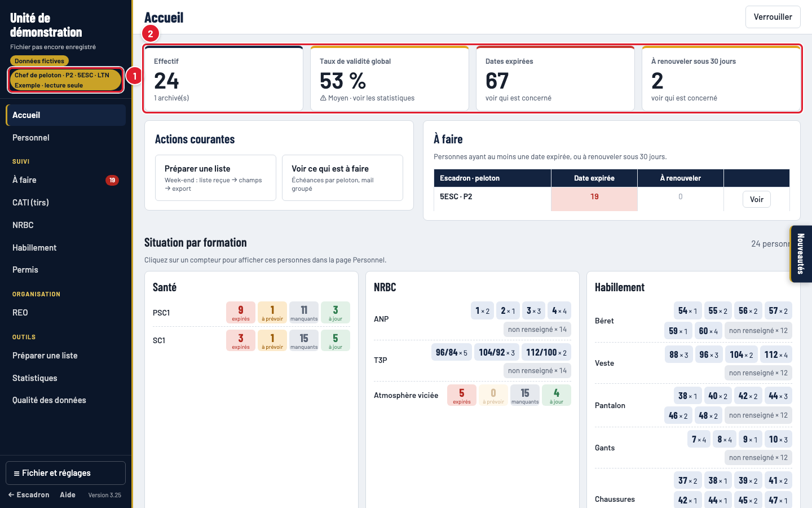
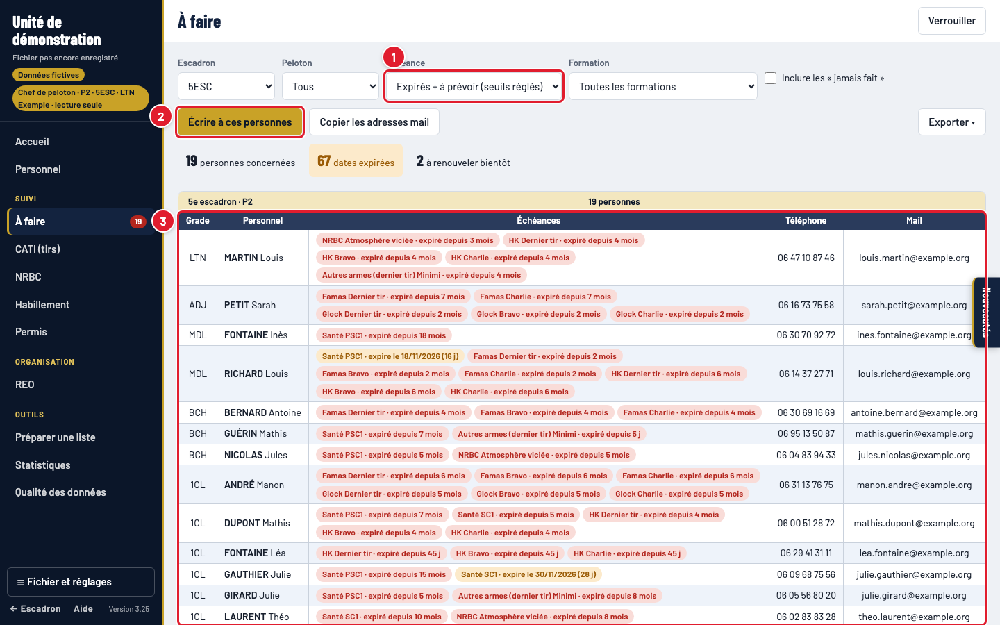
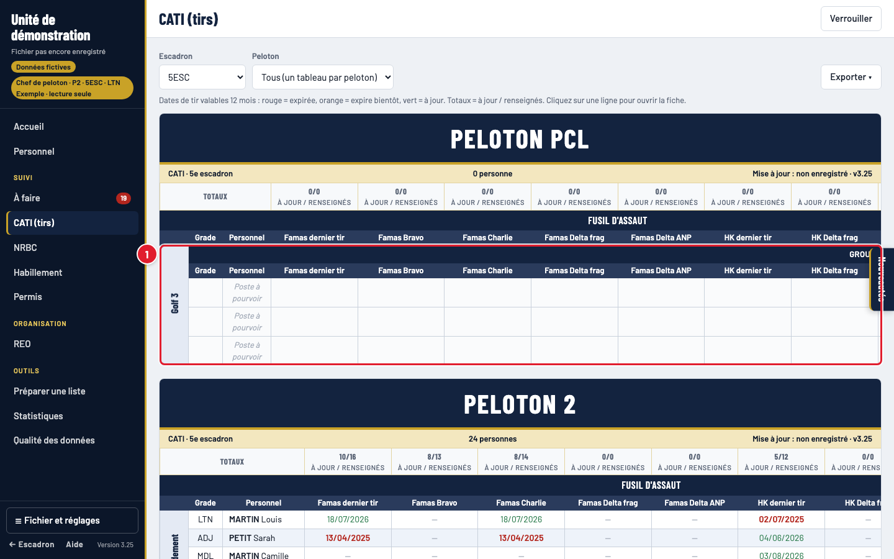
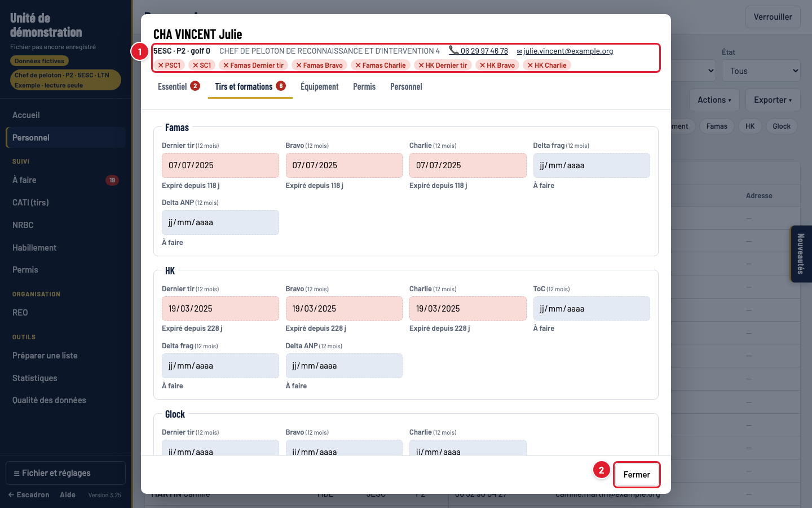
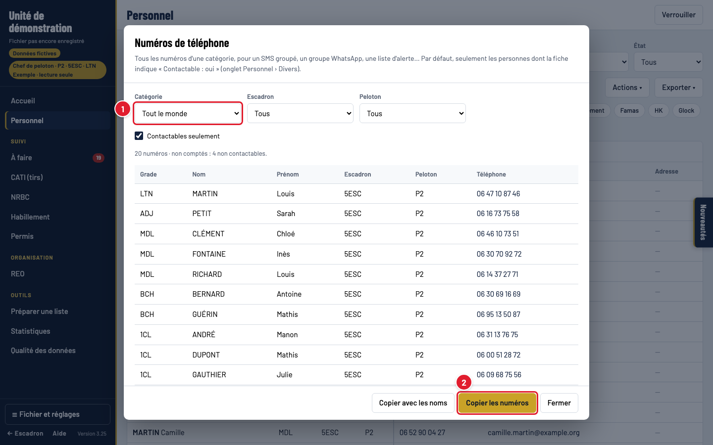

1. Ouvrir le fichier
Le fichier de suivi (.json) est sur le Google Drive. Ouvrez l'outil dans Chrome ou Edge.

- Choisir le fichier… : le fichier de suivi dans le Google Drive.
- Le mot de passe de votre peloton : il n'ouvre que votre peloton. Les autres restent illisibles.
- Déverrouiller.
2. Votre peloton en un coup d'œil

- Votre accès : peloton, escadron, lecture seule. Vous ne voyez que les fiches de votre peloton et ne pouvez rien modifier.
- Les chiffres de votre peloton : effectif, taux de validité, dates expirées, à renouveler. Cliquez pour voir les personnes concernées.
3. Qui doit refaire quoi
Page À faire : toutes les échéances de votre peloton.

- Échéance : déjà expirés, ou aussi ce qui expire bientôt. Le filtre « Formation » à côté garde une seule formation (ex. Famas).
- Écrire à ces personnes : un mail à tous ceux affichés, en copie cachée.
- Chaque personne et ses échéances, avec téléphone et mail.
La fin de contrat et la VMP sont des dates de fin : elles s'affichent en orange quand elles approchent (90 et 60 jours avant).
4. Les tirs du peloton (CATI)

- Un bloc par golf, une colonne par arme et par tir, en couleur. Cliquez sur une ligne pour ouvrir la fiche.
Même présentation pour NRBC et Habillement (tailles du peloton) et Permis.
5. Consulter une personne
Page Personnel (recherche par nom), ou un clic sur une ligne dans À faire ou CATI.

- Le bandeau : toutes les alertes de la personne (✕ rouge = expiré, ⚠ orange = bientôt).
- Fermer : la fiche est en lecture seule.
6. Numéros de téléphone
Personnel › Actions ▾ › Numéros de téléphone : les numéros de votre peloton, par catégorie.

- Officiers, sous-officiers, militaires du rang ou tout le monde. « Contactables seulement » est coché par défaut.
- Copier les numéros : à coller dans les destinataires d'un SMS ou d'un groupe WhatsApp.
7. Imprimer, exporter
Chaque page a un menu Exporter ▾ : Excel mis en forme, ou Imprimer / PDF (pratique pour afficher la situation des tirs du peloton).
8. Verrouiller, corrections
- Verrouiller en quittant le poste. Après 15 minutes sans activité, l'écran se verrouille tout seul : retapez votre mot de passe pour reprendre.
- Ne prêtez pas le mot de passe du peloton en dehors des chefs de groupe, et ne l'écrivez pas dans un mail.
- Une date fausse, un tir pas enregistré, un numéro à changer ? Envoyez la correction au secrétariat (nom, ce qui est faux, la bonne valeur) : vous ne pouvez pas modifier les fiches.

- Votre mot de passe.
- Reprendre la session.
Suivi du personnel · guide du chef de peloton · images réalisées avec des données fictives.